Mes réalisations
Projets SIG
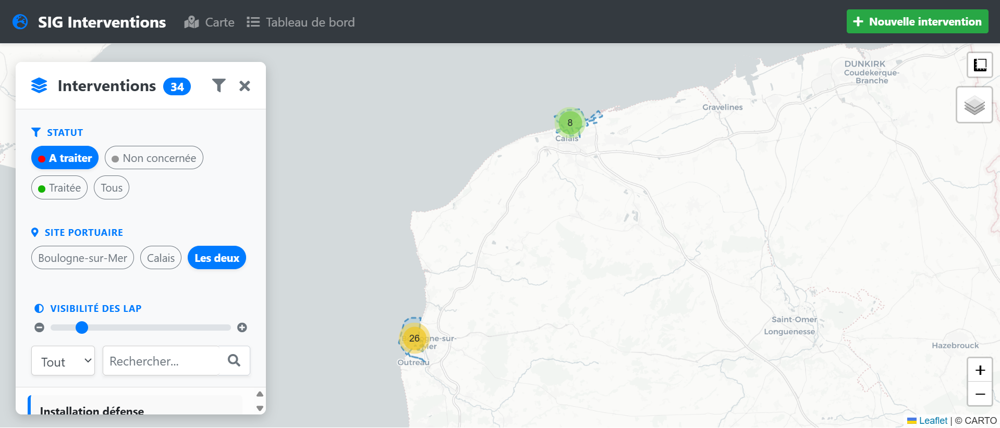
Outil cartographique portuaire
Application web de suivi des interventions sur le domaine portuaire de Boulogne-sur-Mer—Calais.
Django, PostgreSQL/PostGIS, Leaflet.js
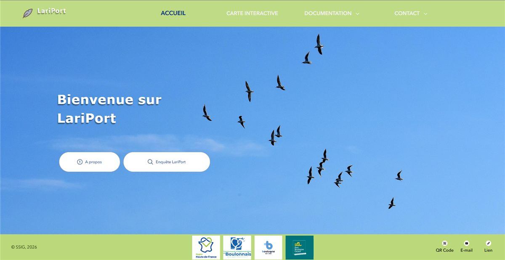
Portail Laridés
Portail cartographique de suivi des colonies de mouettes et goélands sur le port.
ArcGIS Online, Experience Builder
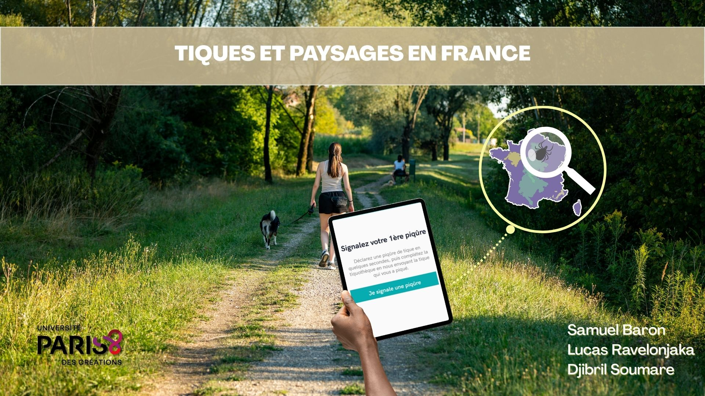
Tiques et paysages français
Analyse multivariée (ACP, k-means) des paysages associés aux piqûres de tiques en France.
Python, R, QGIS, Experience Builder
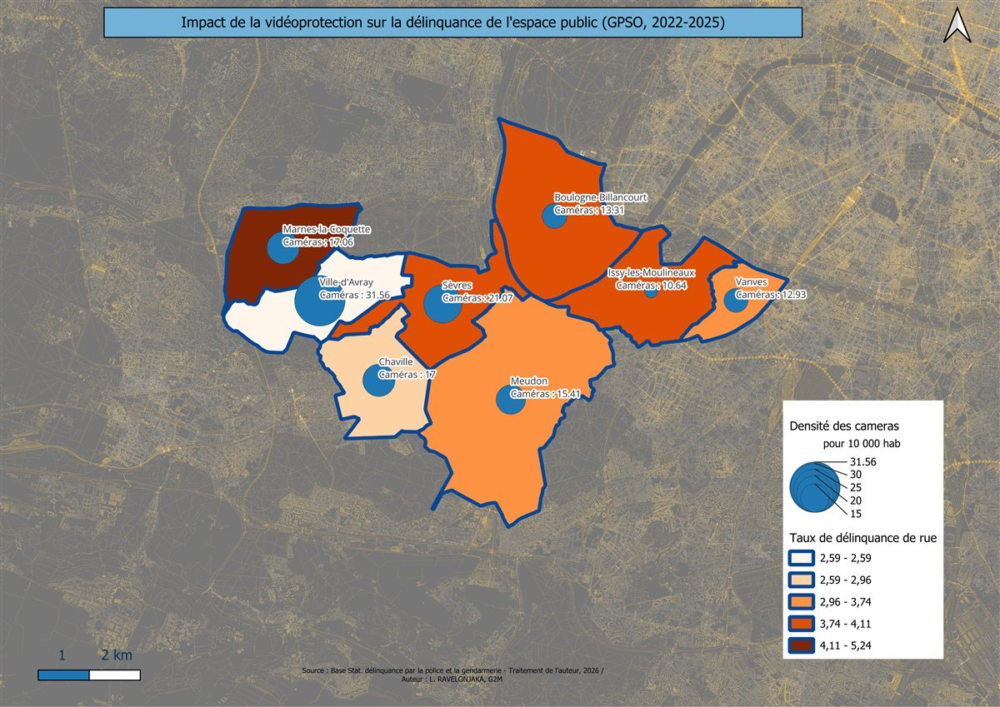
Vidéoprotection et sécurité
Analyse SIG de l'impact de la vidéoprotection sur la délinquance de rue à Grand Paris Seine Ouest.
Python/Pandas, QGIS, PyQGIS, Open Data
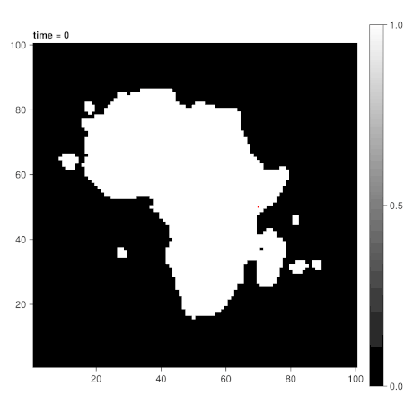
Simulation "Out of Africa"
Modèle multi-agents de la dispersion humaine depuis l'Afrique vers le Vieux Monde.
Julia, Agents.jl, CairoMakie
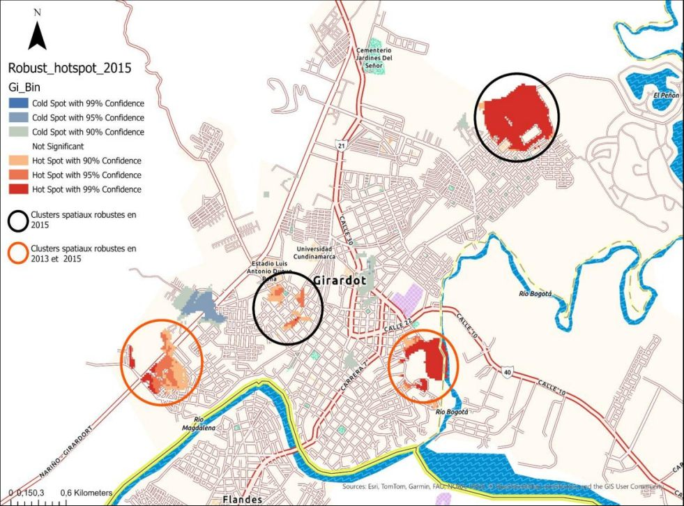
Dengue à Girardot
Analyse spatio-temporelle des clusters épidémiques de dengue en Colombie.
SaTScan, ArcGIS Pro
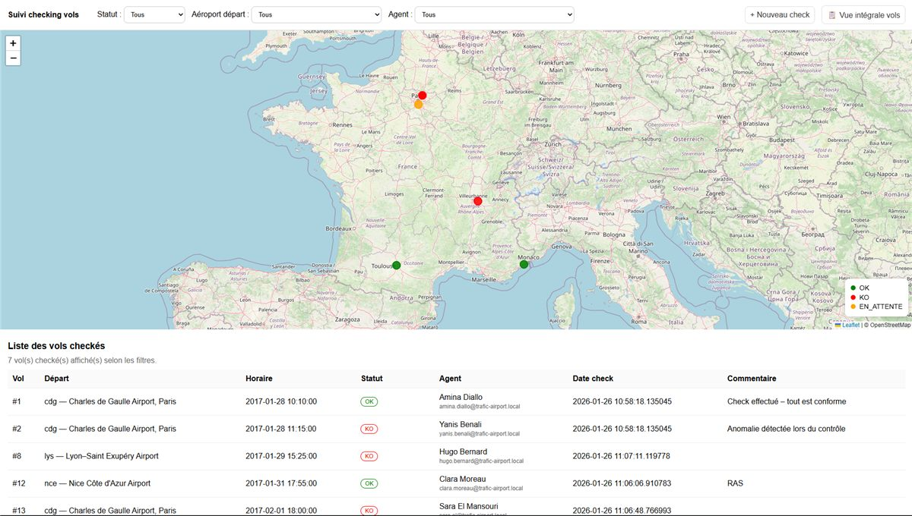
Application métier ATE
Outil de checking des vols pour agents de trafic aérien avec carte interactive.
PHP, PostgreSQL, Leaflet.js

Blog Sticknation
Plateforme communautaire d'inventaire cartographique avec Django et Leaflet.
Django, SQLite, Leaflet.js, AJAX
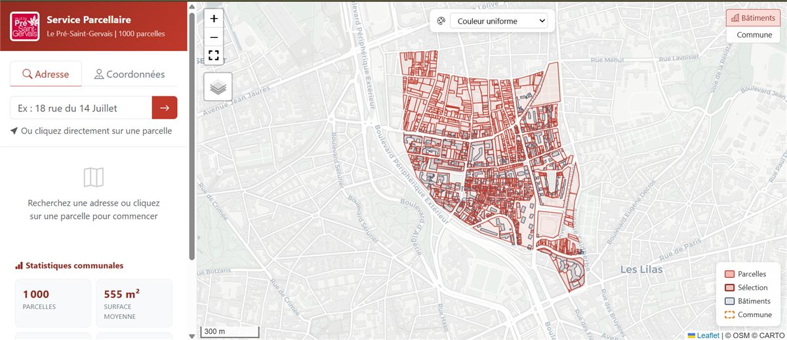
Service parcellaire LPSG
Application web d'interrogation du cadastre du Pré-Saint-Gervais : recherche de parcelles, statistiques bâti, pente du terrain et historique des transactions (DVF).
PostgreSQL/PostGIS, pg_featureserv, Leaflet.js, Bootstrap
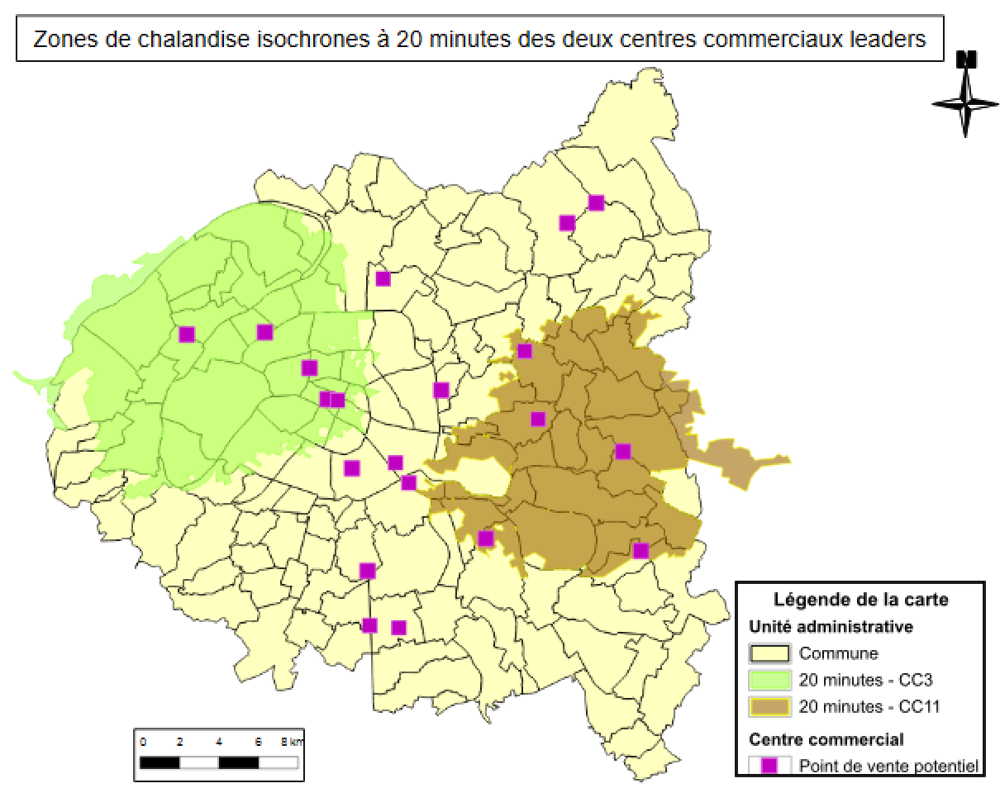
Géomarketing : implantation commerciale
Étude d'implantation d'une boutique de téléphonie en Île-de-France : qualification socio-économique du territoire, zones de chalandise isochrones et arbitrage spatial entre centres commerciaux.
Geoconcept, R/RMarkdown
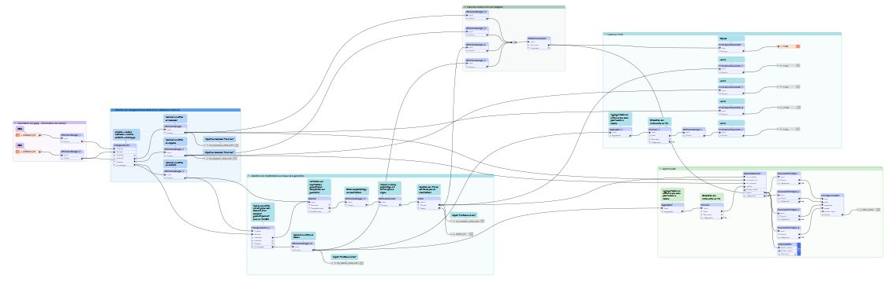
Évolution des contours IRIS
Flux ETL d'analyse de l'évolution géométrique et attributaire des contours IRIS (INSEE) entre les millésimes 2024 et 2025 sur le territoire français.
FME (ChangeDetector, Matcher), données IGN/INSEE

Accessibilité des espaces verts
GP Tool ArcGIS Pro d'analyse de l'accessibilité des espaces verts via le réseau routier : buffer paramétrable, intersection, agrégation spatiale et calcul d'un indice par commune.
ArcGIS Pro, ArcPy (Python), IA générative
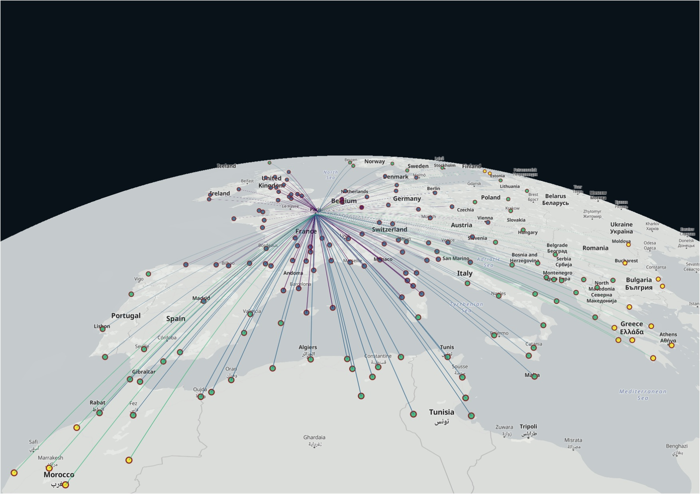
Isochrones 3h30 depuis Paris
Cartographie des villes atteignables en 3h30 depuis Paris selon cinq modes de transport (train, voiture, avion, vélo, marche). Analyse comparée et récit de données sous forme de storymap.
Python, QGIS, ArcGIS StoryMaps